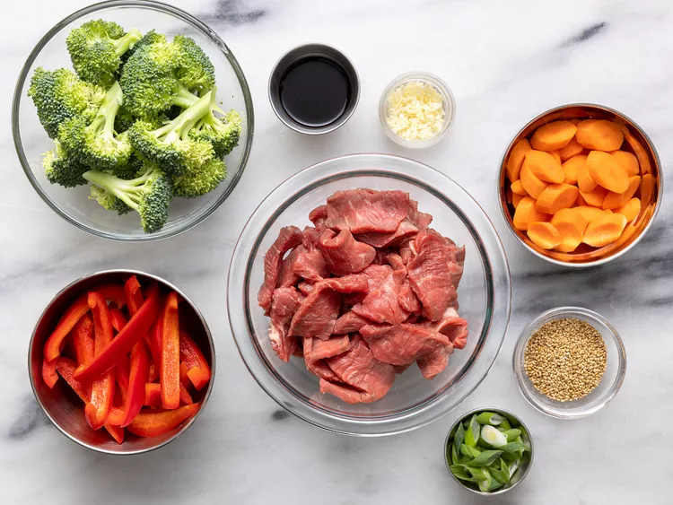

Quick Beef Stir-Fry

Quick and easy beef stir-fry. I make this on my busiest weeknights.
Ingredients
- 2 tablespoons vegetable oil
- 1 pound beef sirloin, cut into 2-inch strips
- 1 ½ cups fresh broccoli florets
- 1 red bell pepper, cut into matchsticks
- 2 carrots, thinly sliced
- 1 green onion, chopped
- 1 teaspoon minced garlic
- 2 tablespoons soy sauce
- 2 tablespoons sesame seeds, toasted
Directions:
- Gather all ingredients.

- Heat vegetable oil in a large wok or skillet over medium-high heat; cook and stir beef until browned, 3 to 4
minutes.

- Move beef to the side of the wok and add broccoli, bell pepper, carrots, green onion, and garlic to the center
of the wok. Cook and stir vegetables for 2 minutes.
- Stir beef into vegetables and season with soy sauce and sesame seeds. Continue to cook and stir until
vegetables are tender, about 2 more minutes.

Air fly Chicken Thighs